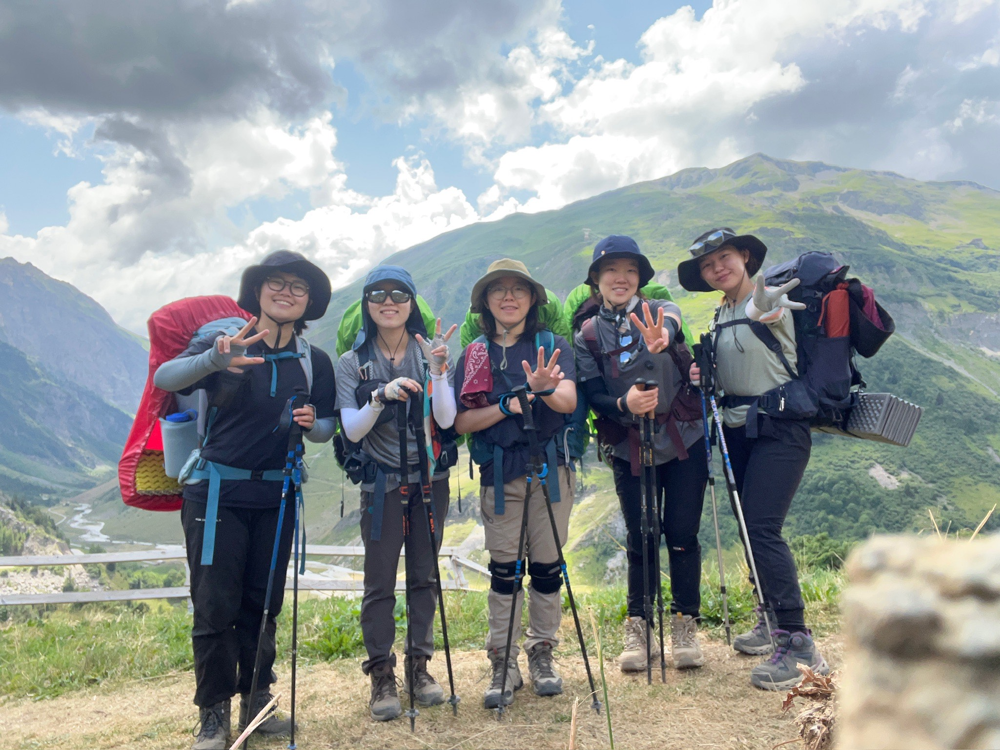
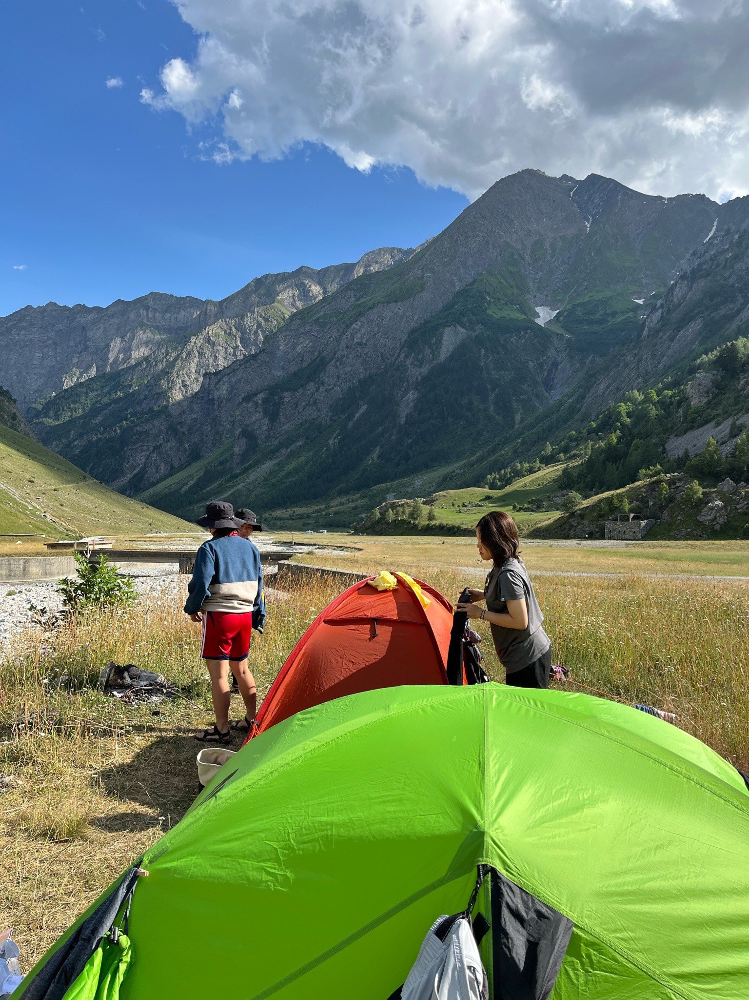
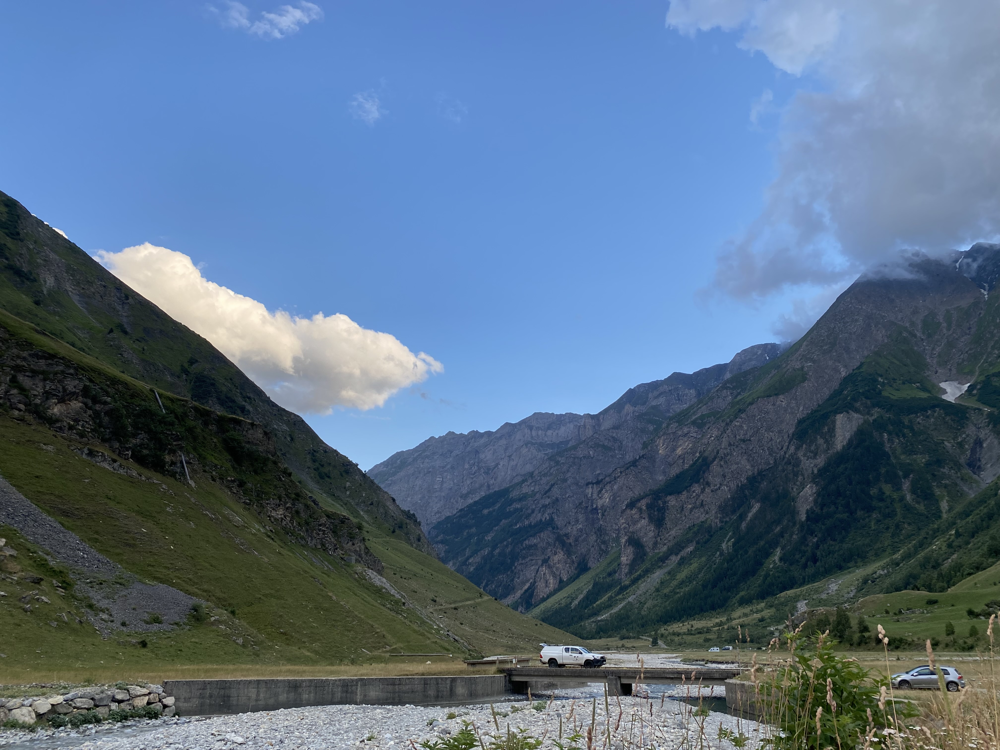

- TMB란?
- 코스 소개
- 일별 코스
TMB 3일차



Bonhomme 산장에서 Les Chapieux
거리: 5.1km, 하강고도: 900m
루트
본옴므 산장에서 Les Chapieux 캠핑장으로 하산
숙식
- 아침식사: 미역 블럭국으로 죽먹음
- 점심식사: 노바 산장에서 오믈렛, 파스타, 버거 등 - 5인 82.8유로
- 저녁식사: 스프, 빵 등 - 5인 38.7유로(행동식, 다음날 아침 포함)
- 숙박: 노바 산장 근처 무료 캠핑장
비용
- 식비
- 미역 블럭국으로 아침식사: 0유로
- 노바 산장 점심식사: 16.56유로
- 스프, 빵 등 장 본 걸로 저녁식사: 7.74유로(행동식, 다음날 아침 포함)
- 숙박
노바 산장 앞 캠핑장: 0유로
- 총 비용: 24.3유로